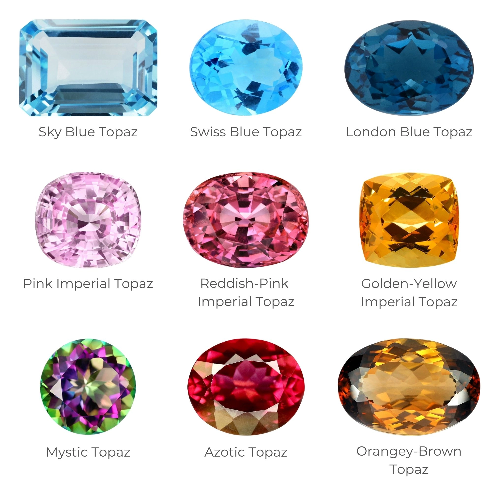

Topaze
Système cristalin : ortorhombique
Indice de réfraction : 1,608 à 1,640
Birèfringence : uniaxe -0,010 à 0,015
Densité : 3,54
Dureté : 8
Couleur : incolore bleu jaune rose orange brun noir
Image :
